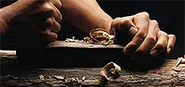
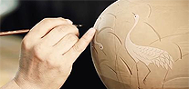

晋中非物质遗产
JIN ZHONG FEIWUZHI WENHUA YICHAN
网站首页
文化视窗
文化遗产
公共服务
在线展示
文化精英
公众文化
文化商城
文化传承 晋善晋美
Cultural heritage Jin Shan Jin Mei
传承晋中文化展现晋中之美
文化
视窗
Cultural window
文化政策
学术观点
新闻资讯
学术观点
Academic point of view
当前位置：
网站首页
>
文化视窗
>
学术观点
越剧名家萧雅携两台大戏进京献艺
深受京城越迷喜爱的沪上越剧名家萧雅，将携两台越剧经典剧目《盘妻索妻》和《新巡按斩父》于 演出此次进京演出的两台剧目中.....

首届中国纺织非遗大会将办
深受京城越迷喜爱的沪上越剧名家萧雅，将携两台越剧经典剧目《盘妻索妻》和《新巡按斩父》于 演出此次进京演出的两台剧目中.....
第五届新疆非遗展在吉木萨尔举办
深受京城越迷喜爱的沪上越剧名家萧雅，将携两台越剧经典剧目《盘妻索妻》和《新巡按斩父》于 演出此次进京演出的两台剧目中.....

广东将展示210多项非遗活动
深受京城越迷喜爱的沪上越剧名家萧雅，将携两台越剧经典剧目《盘妻索妻》和《新巡按斩父》于 演出此次进京演出的两台剧目中.....
首届中国纺织非遗大会将办
深受京城越迷喜爱的沪上越剧名家萧雅，将携两台越剧经典剧目《盘妻索妻》和《新巡按斩父》于 演出此次进京演出的两台剧目中.....
文化部确定文化和自然遗产日宣传主题和口号 正式启动遗产日宣传活动
深受京城越迷喜爱的沪上越剧名家萧雅，将携两台越剧经典剧目《盘妻索妻》和《新巡按斩父》于 演出此次进京演出的两台剧目中.....
上一页
1
2
3
下一页